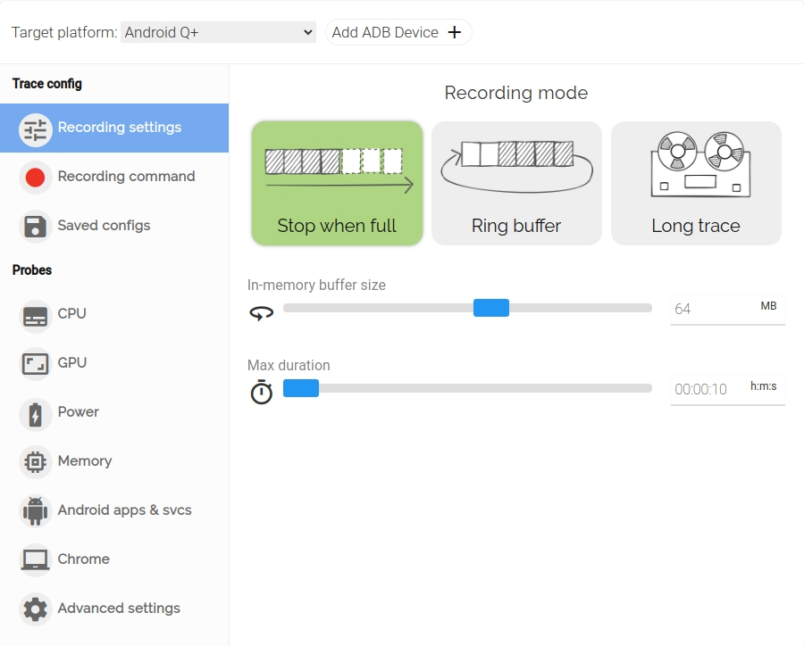
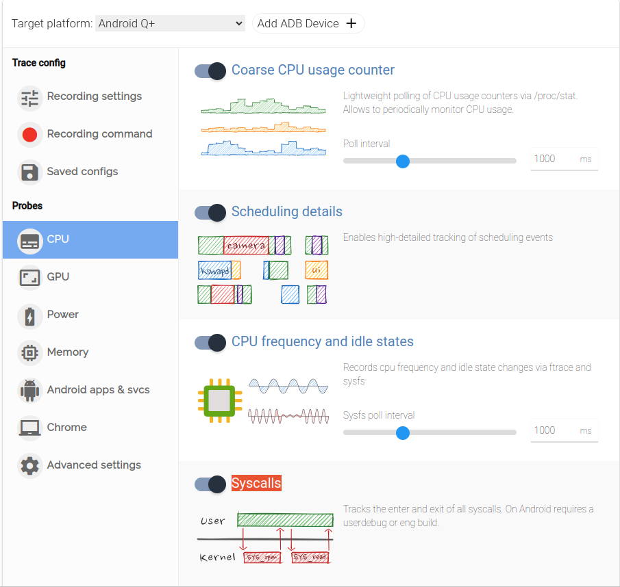
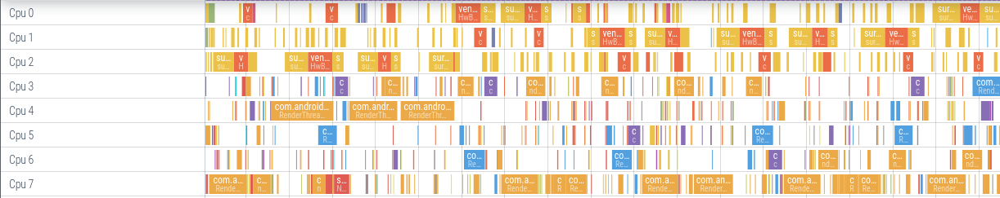
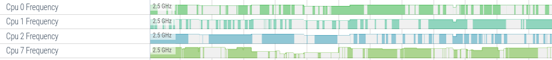
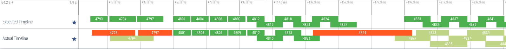
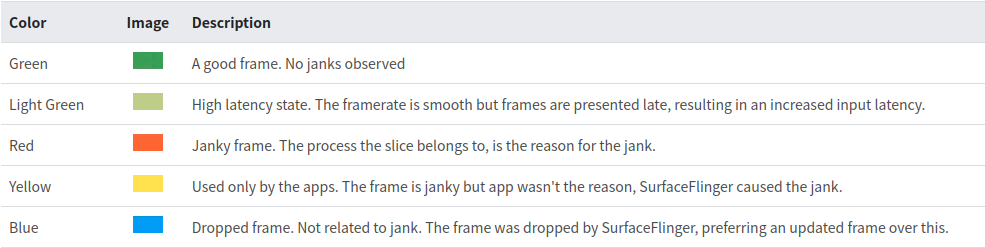
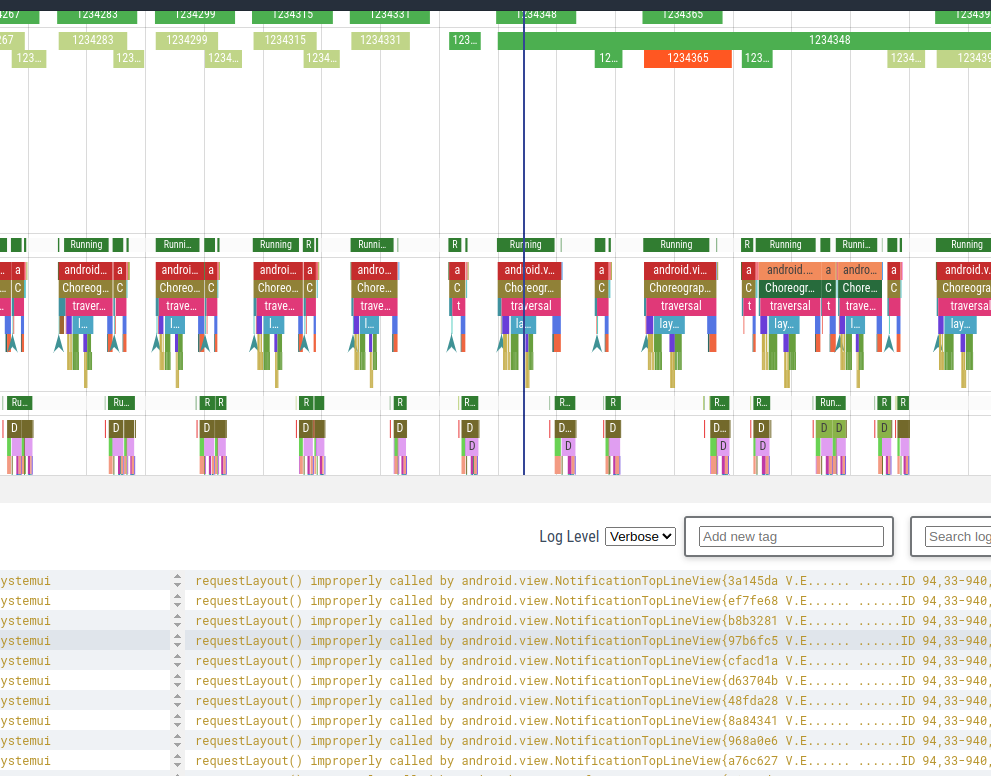
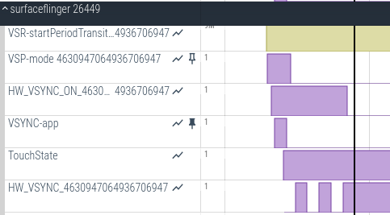
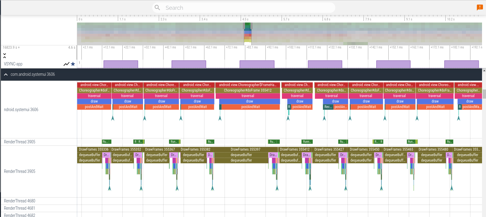
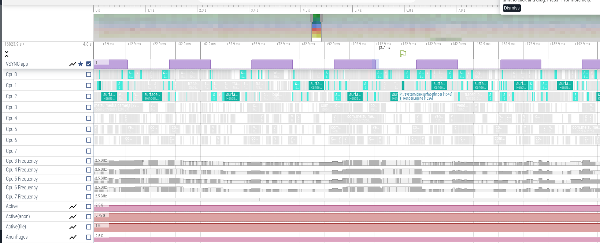

录制trace方法
手机界面抓取
打开 设置-》辅助功能-》开发者选项-》系统跟踪。
或者通过命令打开界面：
adb shell am start com.android.traceur/com.android.traceur.MainActivity
类别项可以选择需要录制的项。
打开长期跟踪项。
点击上方的录制跟踪记录后开始录制，再次点击开关后停止录制，可以把trace文件保存到你想要保存的地方。
可以从 /data/local/traces 导出录制好的trace文件。
命令行抓取
record_android_trace
使用源码里面的工具：external/perfetto/tools/record_android_trace
./record_android_trace -o $(date +%Y%m%d_%H%M%S)_trace_file.perfetto-trace -t 5s -b 32mb sched freq idle am wm gfx view binder_driver hal dalvik camera input res memory gfx view wm am ss video camera hal res sync idle binder_driver binder_lock ss aidl
抓取完成后会自动打开浏览器查看trace文件。
可以通过 ./record_android_trace -h 来查看支持的参数配置。
比如，通过 ./record_android_trace --list 来查看支持属性配置。
perfetto
adb shell perfetto -o /data/misc/perfetto-traces/trace -t 10s sched freq idle am wm gfx view binder_driver hal dalvik camera input res memory aidl
如果遇到目录权限问题，换个目录试试：
adb shell perfetto -o /data/local/traces/trace_file.perfetto-trace -t 10s sched freq idle am wm gfx view binder_driver hal dalvik camera input res memory aidl
也可以从 https://ui.perfetto.dev/ 复制已经配置好的配置文件，然后到终端执行。
比如：
adb shell perfetto \
-c - --txt \
-o /data/misc/perfetto-traces/trace \
<<EOF
buffers: {
size_kb: 63488
fill_policy: DISCARD
}
buffers: {
size_kb: 2048
fill_policy: DISCARD
}
data_sources: {
config {
name: "android.gpu.memory"
}
}
data_sources: {
config {
name: "android.power"
android_power_config {
battery_poll_ms: 1000
battery_counters: BATTERY_COUNTER_CAPACITY_PERCENT
battery_counters: BATTERY_COUNTER_CHARGE
battery_counters: BATTERY_COUNTER_CURRENT
collect_power_rails: true
}
}
}
data_sources: {
config {
name: "linux.process_stats"
target_buffer: 1
process_stats_config {
scan_all_processes_on_start: true
proc_stats_poll_ms: 1000
}
}
}
data_sources: {
config {
name: "android.log"
android_log_config {
}
}
}
data_sources: {
config {
name: "android.surfaceflinger.frametimeline"
}
}
data_sources: {
config {
name: "android.game_interventions"
}
}
data_sources: {
config {
name: "linux.sys_stats"
sys_stats_config {
meminfo_period_ms: 1000
vmstat_period_ms: 1000
stat_period_ms: 1000
stat_counters: STAT_CPU_TIMES
stat_counters: STAT_FORK_COUNT
cpufreq_period_ms: 1000
}
}
}
data_sources: {
config {
name: "android.heapprofd"
target_buffer: 0
heapprofd_config {
sampling_interval_bytes: 4096
shmem_size_bytes: 8388608
block_client: true
}
}
}
data_sources: {
config {
name: "android.java_hprof"
target_buffer: 0
java_hprof_config {
}
}
}
data_sources: {
config {
name: "linux.ftrace"
ftrace_config {
ftrace_events: "sched/sched_switch"
ftrace_events: "power/suspend_resume"
ftrace_events: "sched/sched_wakeup"
ftrace_events: "sched/sched_wakeup_new"
ftrace_events: "sched/sched_waking"
ftrace_events: "power/cpu_frequency"
ftrace_events: "power/cpu_idle"
ftrace_events: "power/gpu_frequency"
ftrace_events: "gpu_mem/gpu_mem_total"
ftrace_events: "raw_syscalls/sys_enter"
ftrace_events: "raw_syscalls/sys_exit"
ftrace_events: "regulator/regulator_set_voltage"
ftrace_events: "regulator/regulator_set_voltage_complete"
ftrace_events: "power/clock_enable"
ftrace_events: "power/clock_disable"
ftrace_events: "power/clock_set_rate"
ftrace_events: "mm_event/mm_event_record"
ftrace_events: "kmem/rss_stat"
ftrace_events: "ion/ion_stat"
ftrace_events: "dmabuf_heap/dma_heap_stat"
ftrace_events: "kmem/ion_heap_grow"
ftrace_events: "kmem/ion_heap_shrink"
ftrace_events: "sched/sched_process_exit"
ftrace_events: "sched/sched_process_free"
ftrace_events: "task/task_newtask"
ftrace_events: "task/task_rename"
ftrace_events: "lowmemorykiller/lowmemory_kill"
ftrace_events: "oom/oom_score_adj_update"
ftrace_events: "ftrace/print"
atrace_apps: "*"
}
}
}
duration_ms: 10000
EOF
配置脚本
另外还可以把上面的命令录制成脚本，存放在电脑上，方便执行录制。
配置文件：
config.pbtx：
buffers: {
size_kb: 707200
fill_policy: RING_BUFFER
}
buffers: {
size_kb: 707200
fill_policy: RING_BUFFER
}
data_sources: {
config {
name: "linux.process_stats"
target_buffer: 1
process_stats_config {
scan_all_processes_on_start: true
proc_stats_poll_ms: 1000
}
}
}
data_sources: {
config {
name: "android.log"
android_log_config {
}
}
}
data_sources: {
config {
name: "android.surfaceflinger.frametimeline"
}
}
data_sources: {
config {
name: "linux.sys_stats"
sys_stats_config {
meminfo_period_ms: 1000
vmstat_period_ms: 1000
stat_period_ms: 1000
stat_counters: STAT_CPU_TIMES
stat_counters: STAT_FORK_COUNT
}
}
}
data_sources: {
config {
name: "android.heapprofd"
target_buffer: 0
heapprofd_config {
sampling_interval_bytes: 4096
shmem_size_bytes: 8388608
block_client: true
}
}
}
data_sources: {
config {
name: "android.java_hprof"
target_buffer: 0
java_hprof_config {
}
}
}
data_sources: {
config {
name: "linux.ftrace"
ftrace_config {
ftrace_events: "sched/sched_switch"
ftrace_events: "power/suspend_resume"
ftrace_events: "sched/sched_wakeup"
ftrace_events: "sched/sched_wakeup_new"
ftrace_events: "sched/sched_waking"
ftrace_events: "power/cpu_frequency"
ftrace_events: "power/cpu_idle"
ftrace_events: "sched/sched_process_exit"
ftrace_events: "sched/sched_process_free"
ftrace_events: "task/task_newtask"
ftrace_events: "task/task_rename"
ftrace_events: "lowmemorykiller/lowmemory_kill"
ftrace_events: "oom/oom_score_adj_update"
ftrace_events: "ftrace/print"
ftrace_events: "binder/*"
atrace_categories: "input"
atrace_categories: "gfx"
atrace_categories: "view"
atrace_categories: "webview"
atrace_categories: "camera"
atrace_categories: "dalvik"
atrace_categories: "power"
atrace_categories: "wm"
atrace_categories: "am"
atrace_categories: "ss"
atrace_categories: "sched"
atrace_categories: "freq"
atrace_categories: "binder_driver"
atrace_categories: "aidl"
atrace_categories: "binder_lock"
atrace_apps: "*"
}
}
}
duration_ms: 300000
flush_period_ms: 30000
incremental_state_config {
clear_period_ms: 5000
}
write_into_file: true
脚本：
start:
adb push config.pbtx /data/local/tmp/config.pbtx
adb shell "cat /data/local/tmp/config.pbtx | perfetto --txt -c - -o /data/misc/perfetto-traces/trace.perfetto-trace --detach=HQTest"
stop:
adb shell perfetto --attach=HQTest --stop
adb pull /data/misc/perfetto-traces/trace.perfetto-trace trace_`date +%Y%m%d_%H%M%S`.pb
执行 ./start 就会开始录制，执行 ./stop 会停止录制，然后把 trace 文件copy到当前目录，并以日期来命名。然后就可以打开来查看了。
Perfetto UI 网站抓取
打开 https://ui.perfetto.dev/ 首先配对设备，如有需要就修改配置问题。下面介绍几个配置选项。
Recording mode

Stop when full 模式：perfetto停止工作受Max duration和buffer size影响，一旦满足其中一个条件，perfetto将会停止。
优点：trace不会因为overwrite而导致丢失。
缺点：如果trace太多，会导致提前结束，无法录制到出现问题时候的trace。
一般10s，64mb也就够用了。
Ring buffer 模式：可以看到选项和 Stop when full 一样，意思也是一样。Ring buffer 模式只会收到 Max duration 的影响，时间到了就停止抓取 trace，但是 trace 会有被 overwrite 的风险。
Long trace 模式：用于长时间地抓取 trace，但是由于需要定时将 buffer 中的 trace 写到文件里面去，会有 IO 的影响。前面两个选项和前两个模式的意思是一样的。
Flush on disk every 表示间隔多少时间将buffer中的trace写入到文件中。这个数值不能太大也不能太小。太大了，容易丢trace，太小了容易影响IO。
CPU

Coarse CPU usage counter:
Scheduling details: 可以看到每个cpu上运行的task.

CPU frequency and idle states:可以看到每个cpu的运行频率.

Syscalls:记录进入和退出系统调用的过程，仅能在userdebug和eng版本上生效。
GPU
GPU frequency:可以看到GPU的频率，繁忙程度
GPU memory:可以看到GPU内存，目前只能在Android12+以上的使用
Android APP & svcs
Event log：对应开启下面介绍的 Android logs 功能。
Frame timeline：对应下面介绍的 Actual timeline。
完成配置后点击 "Start Recording",点击 Stop 后在配置文件设置的输出目录中找到 trace 文件，从手机 pull 出来后在 https://ui.perfetto.dev/ 中打开。
如果遇到 “It looks like you didn't add any probes. Please add at least one to get a non-empty trace.” 可以执行命令：adb shell setprop persist.traced.enable 1
Perfetto 基本使用
快捷键
具体的快捷键可以点击看 Perfetto 界面侧边栏里面的 Support -> Keyboard shortcuts 选项。
W : 放大 S : 缩小 A : 左移 D : 右移 M : 高亮选中当前鼠标点击的段。如果需要取消选中，可以点击选中块上面的三角，然后在下面面板中点击 REMOVE。 Ctrl + 鼠标滚轮：放大或者缩小 Shift + 鼠标点击 + 拖动：左右移动
置顶功能
标记功能
分析技巧
VSYNC-app
相较于 systrace，perfetto 不会直接把 VSync 帧在图形界面标注出来，所以我们第一步最好是直接找到 SurfaceFlinger 进程的 VSYNC-app 数据，通过置顶功能把它钉在顶部，方便我们能分析出app每一帧的运行时间。
perfetto 也不会直接高亮显示出应用的问题帧，而需要你通过应用主线程和 RenderThread 线程配合 SurfaceFlinger 的 VSYNC-app 数据配合分析出当前应用的问题帧。
Cpu0--Cpu7
Cpu X Frequency:
Cpu X Max Freq Limit:
Cpu X Min Freq Limit:
Expected Timeline 和 Actual Timeline
我们可以使用 SurfaceFlinger 中的 FrameTimeline 来检测卡顿问题。Perfetto Doc：Android Jank detection with FrameTimeline
在应用主线程上面有两行数据，分别是 Expected Timeline 和 Actual Timeline 。
- Expected Timeline：预期时间线，每个切片表示为应用程序提供的渲染帧的时间。为避免系统卡顿，应用程序应在此时间范围内完成。开始时间是 Choreographer 回调计划运行的时间。
- Actual Timeline：实际时间线，这些切片表示应用完成帧（包括 GPU 工作）并将其发送到 SurfaceFlinger 进行合成所用的实际时间。开始时间是 Choreographer#doFrame 或 AChoreographer_vsyncCallback 开始运行的时间。这里切片的结束时间代表 max（gpu time， post time）。post time 是指应用帧发布到 SurfaceFlinger 的时间。

通过看 Expected Timeli 和 Actual Timeline 的差异，我们可以很快速定位到卡顿的点（红色标识的 Actual Timeline 那一帧就是卡顿）。
我们通过观察当前时间片的颜色可以得到当前帧的运行情况：

- 绿色：正常帧，没有发生卡顿。
- 浅绿色：High latency 状态。帧速率很平滑，但帧显示较晚，导致输入延迟增加。
- 红色：发生卡顿的帧，时间片所属的进程是卡顿的原因。
- 黄色：仅在 App 端使用，发生卡顿，但是原因不在 App，是 SurfaceFlinger 导致了卡顿。
- 蓝色：丢帧，和卡顿无关。该帧被 SurfaceFlinger 丢弃，选择更新的帧而不是此帧。
Perfetto 中开启 FrameTimeline 需要进行下面的配置：
data_sources: {
config {
name: "android.surfaceflinger.frametimeline"
}
}
Android logs
perfetto可以实时记录log，然后将log和trace信息一一对应。
生成的perfetto文件，滑动下方的android log，可以看到有一根竖线，对应到trace的tag，日志和trace tag的一一对应。

如果需要查看日志，需要添加响应配置如下：
data_sources: {
config {
name: "android.log"
android_log_config {
min_prio: PRIO_VERBOSE
filter_tags: "perfetto"
filter_tags: "my_tag_2"
log_ids: LID_DEFAULT
log_ids: LID_RADIO
log_ids: LID_EVENTS
log_ids: LID_SYSTEM
log_ids: LID_CRASH
log_ids: LID_KERNEL
}
}
}
Actual timeline
可以看到SF某一帧是合成的APP的哪一帧，已经合成的状态。
Android Missed Frames
Android Missed Frames:可以标识出掉帧情况，点击后可以看到掉帧的进程。
SurfaceFlinger
HW_VSYNC_0：硬件 Vsync 校准，一般取6个Vsync 样本。 0 代表display id，
HW_VSYNC_ON_0： 代表 HW_VSYNC 开启。 0 代表display id，

Slice Details：
线程状态
点击线程状态一行，可以在界面的下面看到 Thread State：
- 深绿色 : 运行中（Running），代表着处于cpu上的运行中。选中可以在Thread State看到该任务是在哪个cpu进行运行的。
- 浅绿色 : 可运行（Runnable），代表线程可以运行但当前没有真正运行中，需要等待 cpu 调度，这个时间长短代表着cpu调度快慢。可以在Thread State看到当前线程唤醒者是谁。
- 白色/无色: 睡眠中（Sleeping），当前线程没有工作可以做，等待事件驱动干活，比如looper就是大部分时间睡眠，小部分时间有消息后处理消息。
- 橙色Uninterruptible Sleep (IO)，代表不可以中断的休眠状态，一般线程在IO操作上阻塞了。不可中断状态实际上是系统对进程和硬件设备的一种保护机制。比如，当一个进程向磁盘读写数据时，为了保证数据的一致性，在得到磁盘回复前，它是不能被其他进程或者中断打断的。
- 紫红色Uninterruptible Sleep (Non IO)，不可中断的休眠状态，非IO导致，在等内核锁。通常是低内存导致等待、各种各样的内核锁。
animator
animator:该行表示正在执行动画。可以看出动画执行的开始和结束时间以及执行时长。
这是一个 async执行块，主要用于跟踪一个动画的开始与结束。
它的实现是分别在 ValueAnimator.startAnimation() 和 ValueAnimator.endAnimation() 中加入了 Trace。
private void startAnimation() {
if (Trace.isTagEnabled(Trace.TRACE_TAG_VIEW)) {
Trace.asyncTraceBegin(Trace.TRACE_TAG_VIEW, getNameForTrace(),
System.identityHashCode(this));
}
}
private void endAnimation() {
if (Trace.isTagEnabled(Trace.TRACE_TAG_VIEW)) {
Trace.asyncTraceEnd(Trace.TRACE_TAG_VIEW, getNameForTrace(),
System.identityHashCode(this));
}
}
String getNameForTrace() {
return "animator";
}
自定义TAG
Java 实现
由于 Systrace 仅仅展示系统级的信息，不会追踪应用的工作，因此我们无法知道在某个时间段应用中方法的执行情况。如果有这个需求的话，在 Android 4.3 及以上的版本中可以通过Trace类来实现这个功能。它能够让你在任何时候跟踪应用的一举一动。
可以使用 Trace.beginSection（）与 Trace.endSection（）来追踪它们之间的代码。但是要注意下面两点：
- 在 Trace 被嵌套在另一个 Trace 中时，endSection() 方法只会结束离它最近的一个 beginSection(String)，即在一个Trace的过程中是无法中断其他 Trace 的。所以要保证 endSection() 与beginSection(String)调用次数匹配。如果有开始块但是没有结束块，会严重影响应用的性能。
Trace的begin与end必须在同一线程中执行。
protected void onCreate(Bundle savedInstanceState) { super.onCreate(savedInstanceState); setContentView(R.layout.activity_main); ... Trace.beginSection("HQ"); SystemClock.sleep(500); Trace.endSection(); }
在 Activity 的onCreate 方法中加入一段Trace跟踪的代码。
然后命令行抓取 trace 文件，记得要在参数选项中加入 -a <包名>，否则是找不到 HQ 信息的。
因为 Trace.java 这个类中所有开发给三方应用的方法中都加了下面的判断：
if (isTagEnabled(TRACE_TAG_APP)) {
}
加了 -a <包名> 参数就相当于使能了这个属性。
如果是在系统中添加 Trace 信息，还可以使用 Trace.traceBegin()和 Trace.traceEnd()，他们是系统 API，在一般应用中无法使用。
另外，可以使用 Trace.setCounter() 或者 Trace.traceCounter()（系统） 方法来添加对一些属性值的跟踪：
Trace.setCounter("test",testInt);
Trace.traceCounter(Trace.TRACE_TAG_APP,"test",testInt);
native 端实现
native 可以使用atrace相关类方法添加自定义的TAG。
ATRACE_CALL()：对一个function的开头和结尾进行tag。
优点：只需要一个调用既可以实现tag打印，自动跟随作用域进行tag的结束
缺点：需要自己熟练掌握好作用域，没有可以手动控制的tag结束的点
ATRACE_NAME(name): ATRACE_CALL和ATRACE_NAME本质没有区别，只是把名字变成了function的name。ATRACE_CALL 内部调的是ATRACE_NAME。
ATRACE_INT：Counter值，监控变量的变化。
atrace_begin和atrace_end：可以灵活控制开始与结束的trace方法。
同时也可以使用对应宏定义：
ATRACE_BEGIN(name);
ATRACE_END();
来控制。
ATRACE_FORMAT：有时候想要Trace上的显示的标签是动态可以变化的比如打印一个数字，或者是某个变量的值。
比如：
ATRACE_FORMAT("%s %" PRId64 " vsyncIn %.2fms%s", __func__, vsyncId, vsyncIn,
mExpectedPresentTime == expectedVsyncTime ? "" : " (adjusted)");
其他技巧
Handler
Looper在分发消息时会有trace信息跟踪：
private static boolean loopOnce(final Looper me,
final long ident, final int thresholdOverride) {
...
if (traceTag != 0 && Trace.isTagEnabled(traceTag)) {
Trace.traceBegin(traceTag, msg.target.getTraceName(msg));
}
...
try {
msg.target.dispatchMessage(msg);
if (observer != null) {
observer.messageDispatched(token, msg);
}
dispatchEnd = needEndTime ? SystemClock.uptimeMillis() : 0;
}
}
具体在 trace 上的信息是：classname+messageID，通常可以看到类似 com.android.keyguard.KeyguardUpdateMonitor$14: #531 这样的信息，可以先找到KeyguardUpdateMonitor类然后根据 531 来找到收到该消息后执行的方法。
public String getTraceName(@NonNull Message message) {
if (message.callback instanceof TraceNameSupplier) {
return ((TraceNameSupplier) message.callback).getTraceName();
}
final StringBuilder sb = new StringBuilder();
sb.append(getClass().getName()).append(": ");
if (message.callback != null) {
sb.append(message.callback.getClass().getName());
} else {
sb.append("#").append(message.what);
}
return sb.toString();
}
实践
CPU 大小核策略问题
ID： 1178862
这里介绍一个在打开相机时下拉通知栏卡顿的问题。
首先看一下 trace，发现 systemui 渲染耗时正常，DrawFrames大部分时间都在 dequeueBuffer，应该是和相机竞争导致sf合成失速。

但是此时sf跑在0，1，2小核。这个问题就可以调整一下 sf 的CPU策略。
